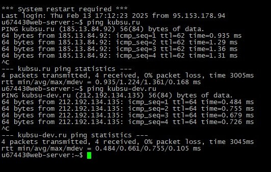
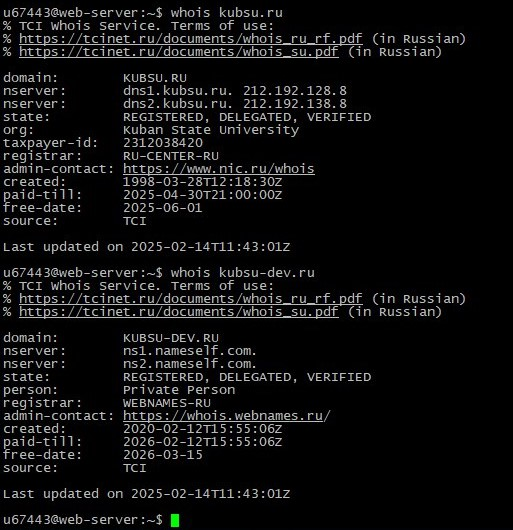

Подключение к серверу kubsu-dev.ru по ssh через клиент Putty
Использование команды ping, чтобы узнать IP-адрес веб-сервера kubsu.ru

Использование команды nslookup, чтобы узнать A-запись и MX-запись домена kubsu.ru

Использование команды nslookup, чтобы узнать A-запись и MX-запись домена kubsu-dev.ru
Использование команды whois, чтобы узнать дату регистрации домена kubsu.ru и kubsu-dev.ru

Клонирование репозитория с помощью команды git clone

FileZilla